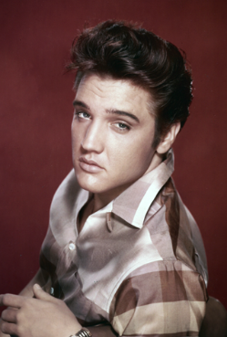
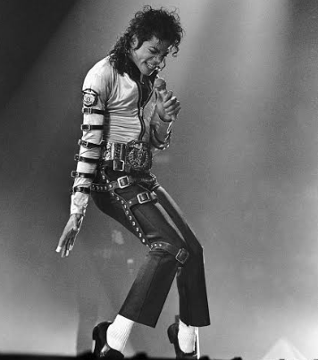
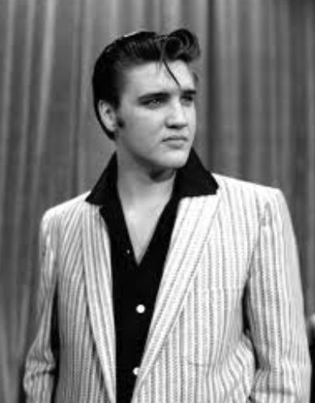
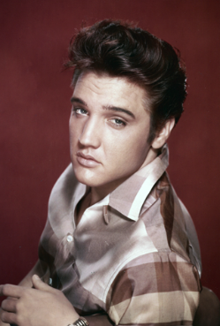
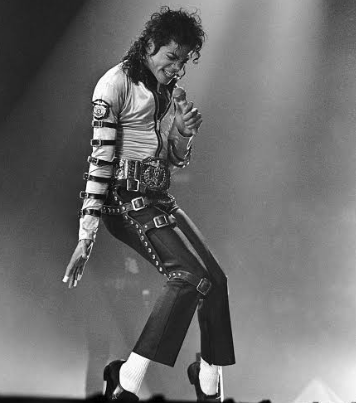
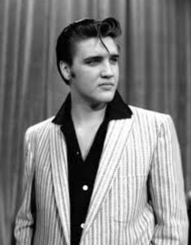
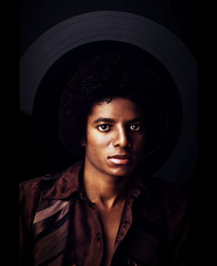
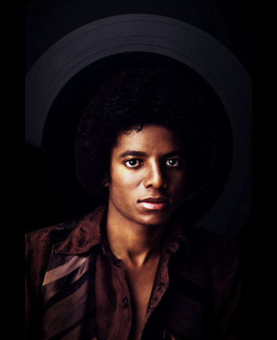

Michael Joseph Jackson was an American singer, songwriter, dancer, and philanthropist. Dubbed the "King of Pop", he is regarded as one of the most significant figures of the 20th century. Over a four-decade career, his music achievements broke racial barriers in America and made him a dominant figure across the world. Through songs, stages, and fashion, he proliferated visual performance for artists in popular music; popularizing street dance moves including the moonwalk, the robot, and the anti-gravity lean. Jackson is often deemed the greatest entertainer of all time based on his acclaim and records.
Elvis Aaron Presley was an American singer and actor. Referred to as the "King of Rock and Roll", he is regarded as one of the most significant cultural figures of the 20th century. Presley's unique performance style atrracted viewers worldwide, making him one of the most successful musicians of all time.
Prince Rogers Nelson was an American singer, songwriter, musician, and actor. Regarded as one of the most influential musicians of his generation, Prince was known for his flamboyant, androgynous persona, wide vocal range, which included a far-reaching falsetto and high-pitched screams, as well as his skill as a multi-instrumentalist, often preferring to play all or most of the instruments on his recordings. His music incorporated a wide variety of styles, including funk, R&B, rock, new wave, soul, synth-pop, pop, jazz, blues, and hip hop. Prince produced his albums himself, pioneering the Minneapolis sound.
 





 
